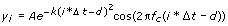

Gaussian Modulated Sine Pattern VI
Owning Palette: Signal Generation VIs
Requires: Full Development System
Generates an array that contains a Gaussian-modulated sinusoidal pattern.
 Add to the block diagram Add to the block diagram |
 Find on the palette Find on the palette |
Owning Palette: Signal Generation VIs
Requires: Full Development System
Generates an array that contains a Gaussian-modulated sinusoidal pattern.
| Add to the block diagram |
Find on the palette |
 |
attenuation (dB) is related to the drop in power on either side of the center frequency, which must be greater than zero. The default is 6 dB. |
|
center frequency (Hz) is the center frequency, or frequency of the carrier, in Hertz. The default is 1. |
 |
samples is the number of samples of the Gauss-Mod Sine Pattern. If samples is less than 1, the VI sets Gauss-Mod Sine Pattern to an empty array and returns an error. The default is 128. |
|
amplitude is the amplitude of the Gauss-Mod Sine Pattern. The default is 1. |
|
delay (s) shifts the peak of the Gauss-Mod Sine Pattern. The default is 0. |
|
delta t (s) is the sampling interval. delta t (s) must be greater than zero. If delta t (s) is less than or equal to zero, the VI sets Gauss-Mod Sine Pattern to an empty array and returns an error. The default is 0.1. |
|
normalized bandwidth is the value multiplied by center frequency to normalize the bandwidth at attenuation (dB) in the power spectrum. normalized bandwidth must be greater than zero. The default is 0.15. |
 |
Gauss-Mod Sine Pattern is an array that contains a Gaussian-modulated sinusoidal pattern of samples. |
 |
error returns any error or warning from the VI. You can wire error to the Error Cluster From Error Code VI to convert the error code or warning into an error cluster. |
If the sequence Y represents Gauss-Mod Sine Pattern, the Gaussian Modulated Sine Pattern VI generates the pattern according to the following equations:

and
where A is the amplitude, b is the normalized bandwidth, q is the attenuation, fc is the center frequency (Hz), d is the delay, and N is the samples.
The following equation represents the envelope of the Gaussian-modulated sine pattern:
The following equation represents the Fourier transform of the envelope:
In its power spectrum, at frequency point fc, the power spectrum density reaches the peak value . When at frequency points , the power spectrum density decreases q dB from the peak value, where q denotes attenuation, as shown by the following screenshot.
Passband Ripple and Stopband Attenuation
Refer to the Gauss Mod Sine Generation VI in the labview\examples\Signal Processing\Signal Generation directory for an example of using the Gaussian Modulated Sine Pattern VI.
 Open example Find related examples
Open example Find related examples